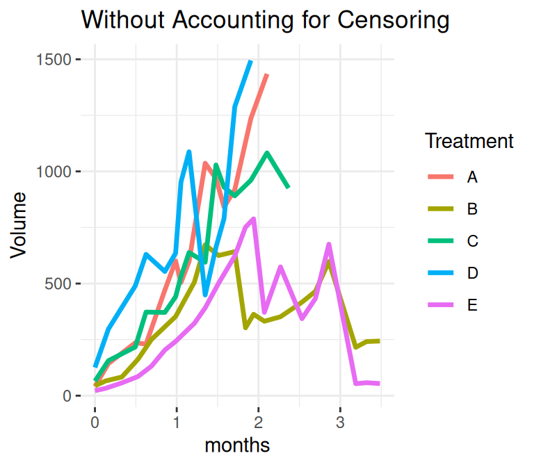
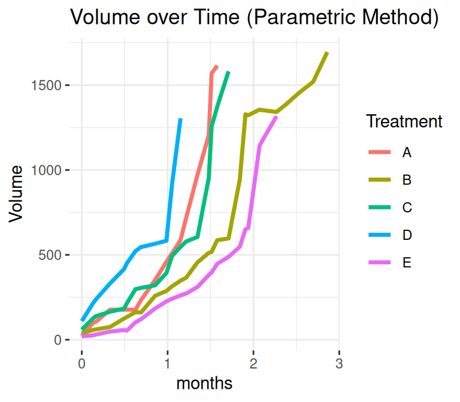
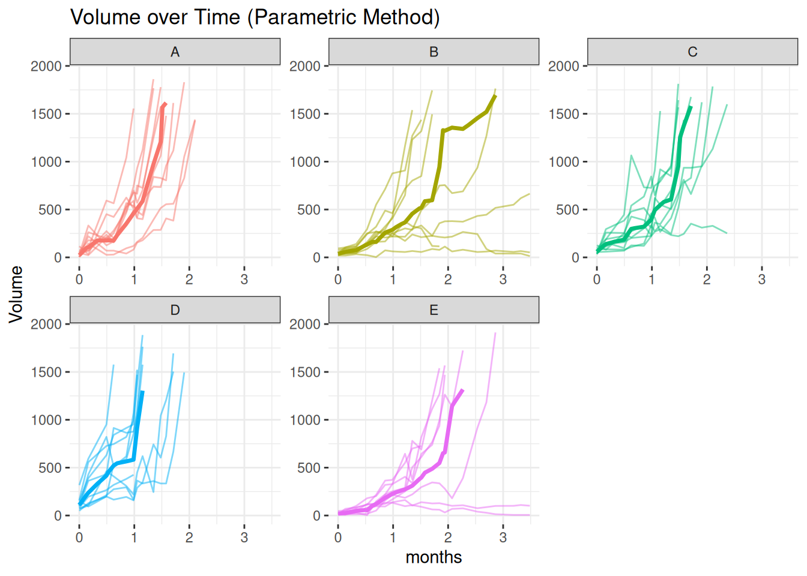
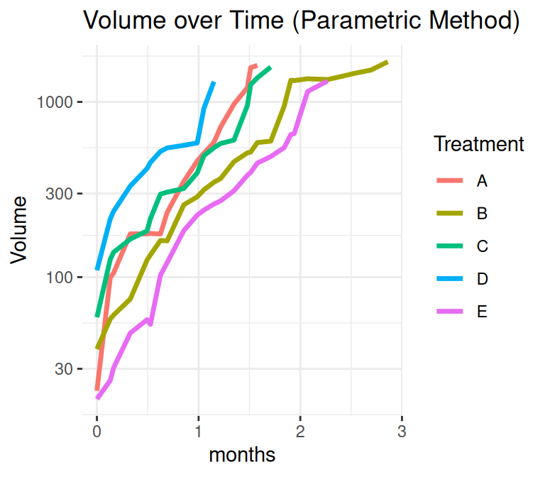
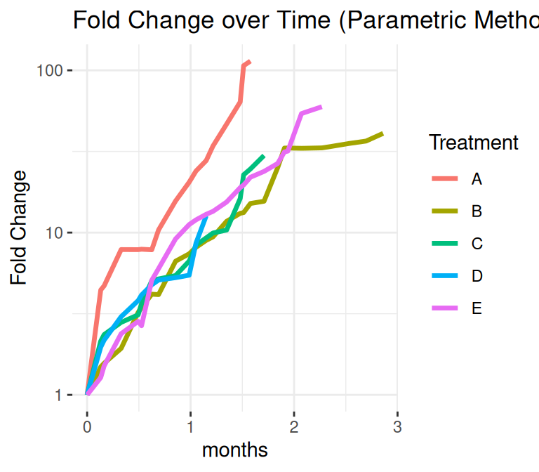
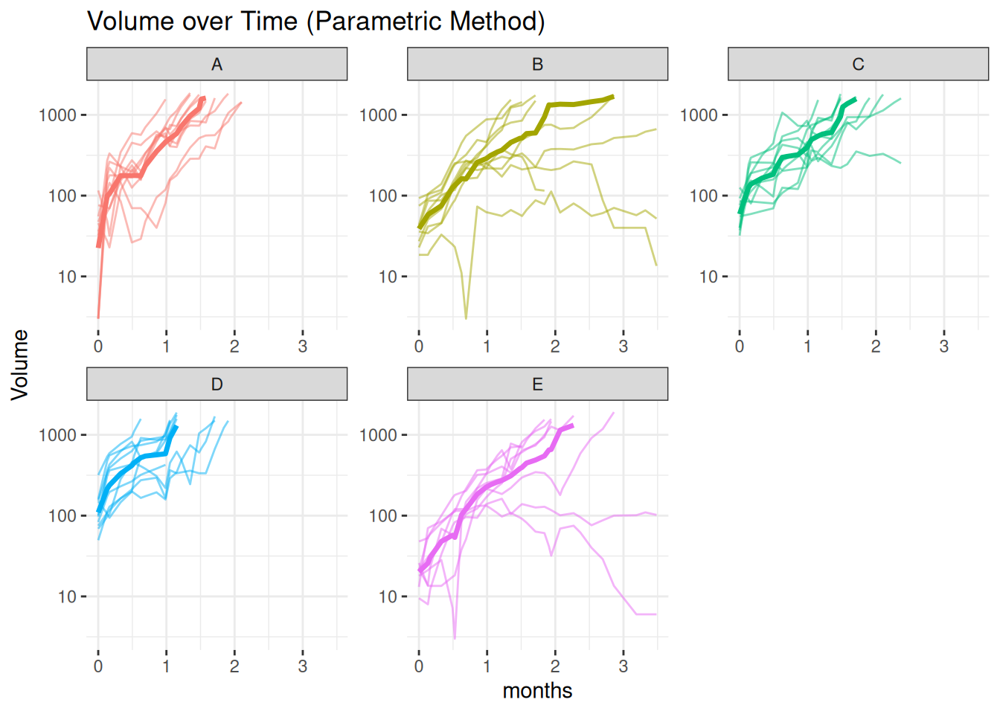
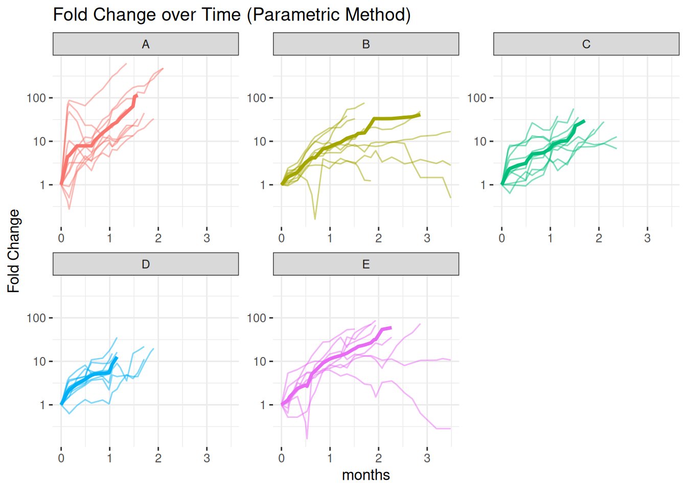
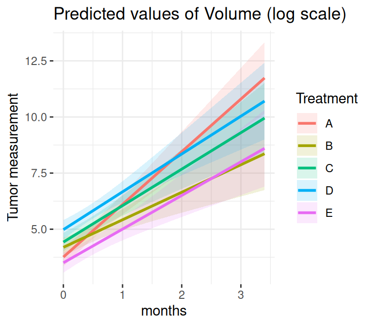
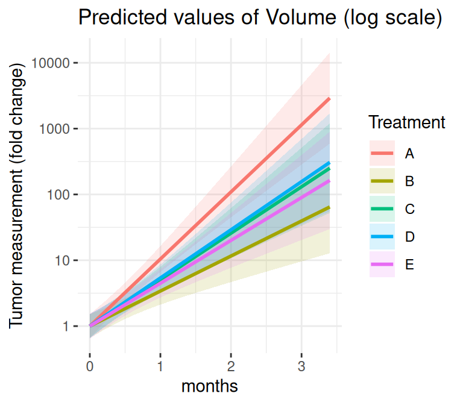
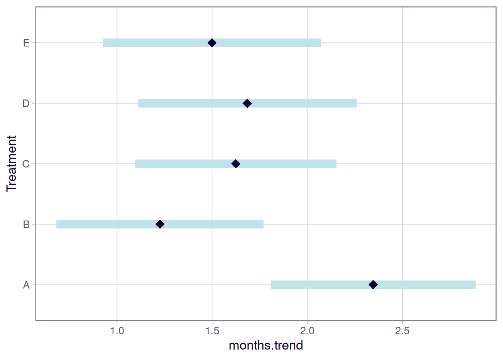

The tumr package provides tools for visualizing and analyzing longitudinal tumor growth data. This guide demonstrates its core functionality, including tumor growth visualization and linear mixed-effects modeling, using the melanoma2 dataset included with the package. All code required to reproduce the examples is provided below.
Getting started
Loading the data
First, load the package and the example dataset.
Creating a tumr object
Most functions in tumr operate on a tumr object, which stores the longitudinal data along with its associated metadata, including subject ID, time, tumor measurements, and treatment group.
To create a tumr object, use the tumr() function:
melanoma2$months <- melanoma2$Day / (365 / 12)
mel2 <- tumr(melanoma2, ID, months, Volume, Treatment)Column names can also be supplied as character strings:
mel2 <- tumr(melanoma2, "ID", "months", "Volume", "Treatment")The resulting object can be passed directly to other functions in the package. The tumr() function also includes a built-in mechanism to check the scale of the time variable.
Visualizing tumor growth
Longitudinal tumor growth studies frequently involve missing observations and informative dropout, which can lead to misleading growth trajectories when only observed measurements are summarized.
To address these issues, tumr preprocesses missing observations and incorporates censoring information when estimating tumor growth trajectories. Details are provided in Handling missing observations and censoring.
Comparison with naive visualization
To illustrate the potential impact of missing observations and dropout, we first define a simple plotting function that summarizes the observed tumor volumes at each time point without explicitly accounting for censoring.
Show code for naive visualization
plot_mean <- function(data, group, time, measure, id,
stat = median, remove_na = FALSE,
ind = FALSE) {
data_summary <- data |>
dplyr::group_by({{group}}, {{time}}) |>
dplyr::summarise(
measure = stat({{measure}}, na.rm = remove_na),
.groups = "drop_last"
) |>
dplyr::ungroup()
if (remove_na == TRUE) {
data_full <- data |>
na.omit()
} else {
data_full <- data
}
p <- ggplot2::ggplot()
if (ind) {
p <- p +
ggplot2::geom_line(
data = data_full,
ggplot2::aes(
x = {{time}},
y = {{measure}},
group = {{id}},
color = {{group}}
),
alpha = 0.5
)
}
p +
ggplot2::geom_line(
data = data_summary,
ggplot2::aes(
x = {{time}},
y = measure,
color = {{group}}
),
linewidth = 1.2
) +
ggplot2::labs(
y = "Volume",
title = "Without Accounting for Censoring"
) +
ggplot2::theme_bw() +
ggplot2::theme(
panel.border = ggplot2::element_blank()
)
}Note: plot_mean() is not part of the tumr package. It is defined here solely to provide a baseline visualization for comparison with the methods implemented in tumr.
The following figure compares a naive mean-based visualization with the parametric approach provided by tumr.
plot_mean(melanoma2, Treatment, months, Volume, ID,
stat = mean)
plot(mel2, par = TRUE, fold = FALSE)

The plot on the left displays the mean tumor volume calculated from the available observations at each time point. This approach does not account for the structure of missingness commonly encountered in tumor growth studies, where subjects may leave the study because of censoring or dropout.
As a result, an apparent decline in average tumor volume may arise from a progressively smaller and potentially selective subset of subjects rather than a true biological reduction in tumor growth.
In contrast, the parametric approach shown in the right panel estimates group-level growth trajectories using the modeling framework implemented in tumr. By incorporating its handling of missing observations and censoring, this approach provides an alternative representation of tumor growth dynamics over time.
Individual tumor growth trajectories
Setting panel = TRUE displays individual tumor growth trajectories and estimated group-level curves in separate panels for each treatment group.
This allows the variation among individual subjects to be examined alongside the estimated growth trend for each treatment group.
plot(mel2, par = TRUE, fold = FALSE, panel = TRUE)
Logarithmic scale and fold change
Tumor growth can also be examined on a logarithmic scale, which is particularly useful when tumor volumes span a wide range or exhibit approximately exponential growth.
The fold argument controls whether the visualization displays the original tumor volume (fold = FALSE) or fold change relative to baseline (fold = TRUE).
The following figures display both measurements on a logarithmic scale.
plot(mel2, par = TRUE, fold = FALSE) +
ggplot2::scale_y_log10()
plot(mel2, par = TRUE, fold = TRUE) +
ggplot2::scale_y_log10()

The same options can be combined with panel = TRUE to display individual trajectories and estimated group-level curves separately for each treatment group.
plot(mel2, par = TRUE, fold = FALSE, panel = TRUE) +
ggplot2::scale_y_log10()
plot(mel2, par = TRUE, fold = TRUE, panel = TRUE) +
ggplot2::scale_y_log10()
Linear mixed-effects models
In addition to visualization, tumr provides tools for statistical modeling of longitudinal tumor growth data.
The lmm() function fits a linear mixed-effects model, which is well suited for repeated tumor measurements because it accounts for correlation among observations from the same subject.
Linear mixed-effects models incorporate two types of effects:
- Fixed effects: Population-level effects of interest, such as treatment, time, and their interaction.
- Random effects: Subject-specific deviations that account for individual variability and within-subject correlation.
By default, the model includes treatment, time, and their interaction as fixed effects, together with subject-specific random intercepts and slopes.
The model can be represented schematically as:
log(measure) ~ group * time + (time | id)
This specification allows each subject to have an individual growth trajectory while estimating overall treatment effects. The model formula can also be customized if desired.
Fitting the model
The lmm() function accepts a tumr object directly.
lmm_mel2 <- lmm(mel2)Summarizing model results
The summary() method uses the emmeans package to report:
- The overall effect of time.
- Treatment-specific growth slopes over time.
- Statistical comparisons of growth slopes between treatment groups.
summary(lmm_mel2)$`overall effect of time`
1 months.trend SE df lower.CL upper.CL
overall 1.68 0.123 45.1 1.43 1.92
Results are averaged over the levels of: Treatment
Degrees-of-freedom method: satterthwaite
Confidence level used: 0.95
$`slope of treatment over time`
Treatment months.trend SE df lower.CL upper.CL
A 2.35 0.268 47.3 1.808 2.88
B 1.23 0.270 39.9 0.681 1.77
C 1.62 0.263 44.4 1.096 2.15
D 1.68 0.287 58.8 1.110 2.26
E 1.50 0.283 38.4 0.927 2.07
Degrees-of-freedom method: satterthwaite
Confidence level used: 0.95
$`test slope differences`
contrast estimate SE df t.ratio p.value
A - B 1.1203 0.380 43.3 2.949 0.0389
A - C 0.7217 0.375 45.8 1.924 0.3193
A - D 0.6618 0.393 53.0 1.685 0.4517
A - E 0.8471 0.389 42.3 2.175 0.2088
B - C -0.3987 0.376 42.0 -1.059 0.8260
B - D -0.4585 0.394 48.6 -1.164 0.7716
B - E -0.2732 0.391 39.1 -0.699 0.9554
C - D -0.0599 0.389 51.5 -0.154 0.9999
C - E 0.1255 0.386 41.0 0.325 0.9975
D - E 0.1854 0.403 47.2 0.460 0.9905
Degrees-of-freedom method: satterthwaite
P value adjustment: tukey method for comparing a family of 5 estimates These results provide information about the estimated tumor growth rates and whether the rates differ across treatment groups.
Visualizing model results
The plot() method for fitted LMM objects provides three types of visualizations:
- Predicted tumor growth trajectories over time.
- Predicted fold change over time.
- Estimated mean growth slopes for each treatment group with confidence intervals.
The first two plots show the predicted tumor volume and fold change over time.
plot(lmm_mel2, "predict")Model has log transformed response. Predictions are on transformed
scale.
plot(lmm_mel2, "predict_fold") +
ggplot2::scale_y_log10()Model has log transformed response. Predictions are on transformed
scale.

Treatment-specific growth slopes and their confidence intervals can also be visualized using the "contrast" option.
plot(lmm_mel2, "contrast")
This visualization facilitates comparisons of estimated growth rates across treatment groups.
Tumor doubling time
The dtime() function estimates tumor doubling times from the fitted linear mixed-effects model, providing an interpretable measure of tumor growth rate.
dtime(lmm_mel2, seed = 123, nsim = 1000)$method
[1] "Tumor Doubling Time Based on Linear Mixed Model"
$message
[1] "The model should demonstrate an exponential growth pattern."
$summary
Treatment mean median q2.5 q97.5
1 A 0.30 0.29 0.24 0.38
2 B 0.61 0.57 0.40 1.00
3 C 0.44 0.43 0.33 0.63
4 D 0.42 0.41 0.31 0.61
5 E 0.48 0.46 0.34 0.73The seed argument ensures reproducibility, and nsim specifies the number of simulations.
Checking for exponential growth
The default linear mixed-effects modeling approach assumes an approximately linear relationship between log-transformed tumor volume and time.
Because a straight line on the log-volume scale corresponds to exponential growth on the original scale, the adequacy of this assumption can be assessed by examining model residuals over time.
The check_exp() function provides a diagnostic visualization for evaluating the exponential growth assumption.
Systematic patterns in the residuals may indicate departures from exponential growth and suggest that a more flexible model is needed.
Further reading
The tumr package provides several additional methods for analyzing longitudinal tumor growth data.
Response feature analysis — A two-stage approach that estimates subject-specific growth slopes and compares them across treatment groups.
Quadratic growth models — An extension of linear mixed-effects models that incorporates quadratic time effects to capture nonlinear tumor growth.
Generalized additive models — A flexible modeling approach that uses smooth functions to describe nonlinear tumor growth trajectories.
Bayesian hierarchical models — A Bayesian approach to modeling longitudinal tumor growth while accounting for subject-level variability and uncertainty.
These articles provide more detailed explanations, examples, and additional modeling options.